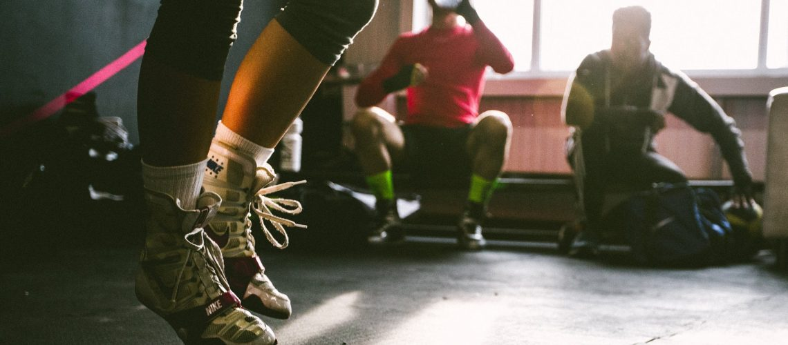
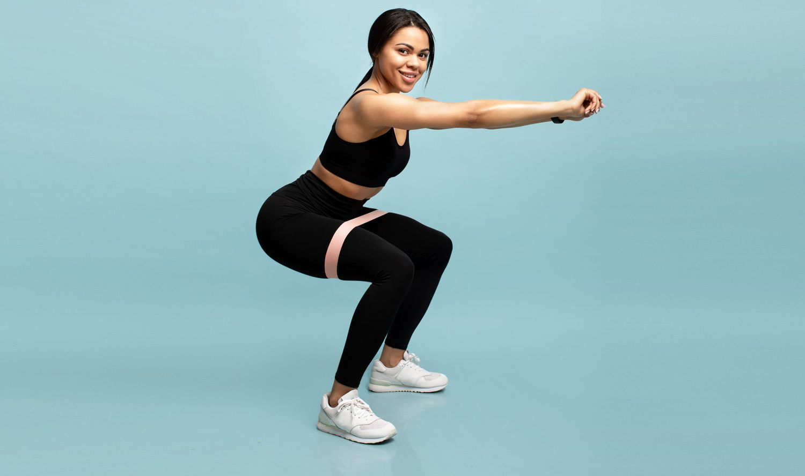
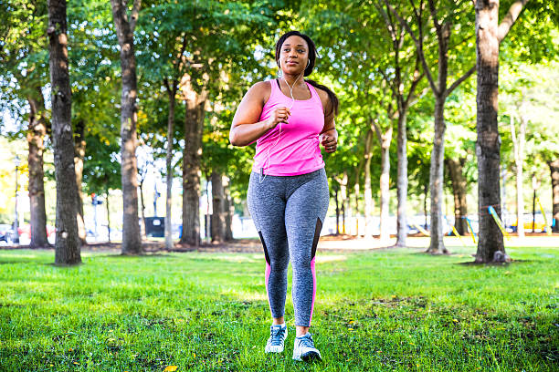
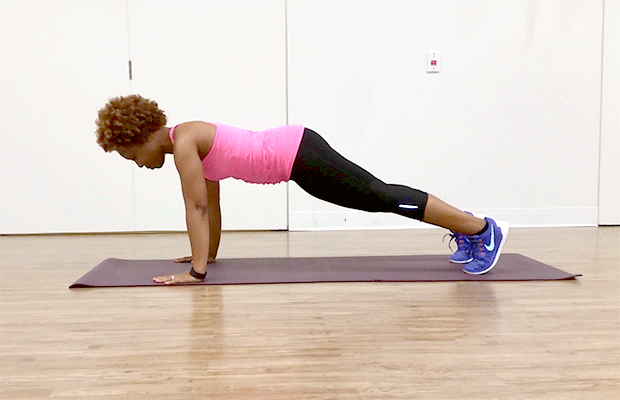
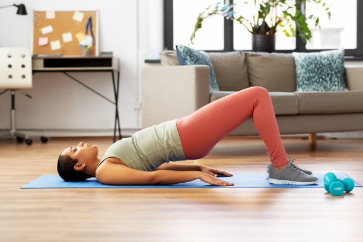

7 Effective and Easy Workouts for Overweight Beginners

Are you trying to create a new workout plan?
Looking for the best workouts for overweight beginners?
While it can be tough to get started with a regular exercise routine, it's not an impossible task! By taking small steps forward and working at your own pace, you'll be able to meet your goals and start feeling the benefits.
Luckily, there are some ways to make your workout session more manageable while still being extremely effective. With the right workouts, you'll be able to push yourself little by little and work towards improving your personal fitness.
Starting a new workout plan can be tough, but you can do it! Below we'll list 7 effective and easy workouts that you can try out if you're overweight.
- Modified Squats 
- Walking 
- Modified Push-Ups 
- Riding a Stationary Bike
- Side Leg Lifts
- Bridges 
- Knee Lifts With Ball
Performing squats is one of the best ways to improve personal fitness. Squats are especially beneficial for your leg muscles, but really improve every part of your body if done right. They're also functional, meaning they'll help you get better with everyday movements as well.
Squats are also one of the best exercises for burning calories. According to this formula, a person who weighs 160 pounds and performs squats for 15 minutes will burn around 230 calories.
When performing a basic squat, you'll start standing up. Then, you'll lower your body to the ground. Then you'll slowly rise back up. Some people perform squats while holding a weight in their hands, and there are plenty of variations you can try.
If it's difficult for you to perform a full squat, you can modify it to make it easier for you. To perform a modified squat, do a squat normally. However, instead of lowering your body all the way to the ground, lower it into a chair instead, before rising back up.
It should come as no surprise that walking is one of the best exercises to focus on if you're looking to improve your fitness and lose weight. While the benefits of walking vary depending on sex and weight, walking 1 mile can burn approximately 100 calories.
Nordic walking, walking with 2 ski poles in hand, can be a great choice to get started with if you're ready to start walking more often.
While you may think you need to jog or run to experience the benefits of this type of cardio, the truth that walking is just as beneficial. Even walking slowly may be able to help you get your heart rate up, and this is what is necessary for having a great cardio exercise.
Push-ups are one of the top exercises you can use to get in shape when you're overweight or obese. Don't worry; it doesn't have to be as bad as you think!
While it can be difficult to do push-ups if you're overweight, you can modify the exercise to make it easier. There are several ways you can do this if a standard push-up is too difficult.
For example, to make a push-up easier, you can perform the exercise while standing up with your hands pushing against the wall instead of the floor. If you want to take it one step further, you can also try doing push-ups on the ground but with your knees down against the floor throughout the exercise.
Performing push-ups will work your entire body and will strengthen your core. Performing push-ups may also reduce the risk of cardiovascular disease.

In addition to walking, riding a stationary bike is a great exercise you can use to improve your body and get your heart rate up. Stationary bikes can come with backrests, providing additional support and a more comfortable experience.
Riding a stationary bike helps strengthening your heart and lungs while also improving your body's ability to use oxygen. It's also a great way to give your lower body a workout and to burn some calories. One study found that a person weighing 185 pounds will burn 311 calories during 30 minutes of moderate riding, and will burn 466 calories during vigorous riding.
While you'll want to do some of the other exercises listed here as well, this is one effective cardio exercise you should consider adding into your routine.

Leg lifts are a great exercise for working out your lower body, and there are several types of leg lifts you can try. Side leg lifts, or side-lying hip abduction exercises, are one of the best types you may want to give a shot.
Side leg lifts can be extremely beneficial for your lower body and will be helpful for having a well-rounded exercise session. They have been shown to reduce pain and increase muscle performance. One 2011 study, for example, showed that a hip abductor strengthening program significantly reduced pain and increased strength in patients with patellofemoral pain syndrome (PFPS).
To do these leg lifts you'll need to lay on your side, placing the hand from your elevated side onto the floor and your other behind your head. Lift your top leg up as high as it will go and then gently bring it back down. Then repeat the exercise for the opposite side of the body.
Performing a glute bridge exercise can also be a good exercise to try when improving your personal fitness as a beginner. Performing bridges will strengthen your core and build your lower back and gluteus muscles.
For this exercise, you'll need to get down on the floor, laying on your back with your knees bent. Then, you'll need to lift up your hips off of the floor and then slowly back down.
If done regularly, doing glute bridges can have a great effect over time and will help you to strengthen your core while also reducing knee and back pain. Because bridges can be done while lying down, they can be a great way to get started with an exercise routine.

For this next exercise, you'll need to have a small weight of some kind that you can hold in your hands. A regular ball usually works great for this exercise, but you can use a small dumbbell or another weighted item as an alternative.
When performing knee lifts, you'll start by holding the ball above your head. Simultaneously bring the ball down in front of you while also bringing one knee up to meet it. Then, return to the starting position. Then repeat, using the other knee.
This exercise will do a great job of working out your core and can be a good workout to try if you're overweight. Performing knee exercises is important for reducing pain, building strength, and losing weight and can be especially beneficial for anyone who suffers from osteoarthritis.
Getting Started With These Easy Workouts
If you're ready to start on your path to improvement, don't put too much pressure on yourself! Consider trying the easy workouts listed above, but if there are any that you can't do, that's okay. Focus on the exercises that you can perform successfully and go from there.
By starting slowly and pushing yourself little by little, you'll eventually get into your new exercise routine and will start feeling better one step at a time.
Need help with your personal fitness? Click here to book a group class at BIG Health & Fitness and get started on your path to improvement now.